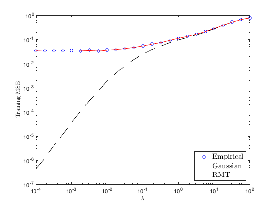

Section 5.5 Practical course material: Performance of large dimensional random Fourier features
This page contains simulations in Section 5.5.
Contents
Training MSEs of random Fourier features versus Gaussian kernel regressions
close all; clear; clc testcase='MNIST'; % among 'MNIST', 'fashion', 'Kuzushiji', 'kannada' n = 1024; N = 256; cs = [1/2 1/2]; k = length(cs); switch testcase case 'MNIST' selected_labels=[3 7]; init_data = loadMNISTImages('../datasets/MNIST/train-images-idx3-ubyte'); init_labels = loadMNISTLabels('../datasets/MNIST/train-labels-idx1-ubyte'); case 'fashion' selected_labels=[1 2]; init_data = loadMNISTImages('../datasets/fashion-MNIST/train-images-idx3-ubyte'); init_labels = loadMNISTLabels('../datasets/fashion-MNIST/train-labels-idx1-ubyte'); case 'Kuzushiji' selected_labels=[3 4]; init_data = loadMNISTImages('../datasets/Kuzushiji-MNIST/train-images-idx3-ubyte'); init_labels = loadMNISTLabels('../../datasets/Kuzushiji-MNIST/train-labels-idx1-ubyte'); case 'kannada' selected_labels=[4 8]; init_data = loadMNISTImages('../datasets/kannada-MNIST/train-images-idx3-ubyte'); init_labels = loadMNISTLabels('../datasets/kannada-MNIST/train-labels-idx1-ubyte'); end [labels,idx_init_labels]=sort(init_labels,'ascend'); images=init_data(:,idx_init_labels); init_n=length(images(1,:)); p=length(images(:,1)); mean_images=mean(images,2); norm2_images=0; for i=1:init_n norm2_images=norm2_images+1/init_n*norm(images(:,i)-mean_images)^2; end images=(images-mean_images*ones(1,size(images,2)))/sqrt(norm2_images)*sqrt(p); selected_images=[]; MNIST = cell(length(selected_labels),1); j=1; for i=selected_labels selected_images=[selected_images images(:,labels==i)]; MNIST{j}=images(:,labels==i); j=j+1; end mean_selected_images=mean(selected_images,2); norm2_selected_images=mean(sum(abs(selected_images-mean_selected_images*ones(1,length(selected_images))).^2)); for j=1:length(selected_labels) MNIST{j}=(MNIST{j}-mean_selected_images*ones(1,size(MNIST{j},2)))/sqrt(norm2_selected_images)*sqrt(p); end nb_data_loop = 10; gamma_loop = 10.^(-4:.25:2); store_MSE_train_1 = zeros(length(gamma_loop),nb_data_loop); store_MSE_train_2 = zeros(length(gamma_loop),nb_data_loop); theo_MSE_train = zeros(length(gamma_loop),nb_data_loop); for gamma_index = 1:length(gamma_loop) gamma = gamma_loop(gamma_index); for data_loop = 1:nb_data_loop % empirical evaluation X=zeros(p,n); y=zeros(n,1); for i=1:k % random data picking data = MNIST{i}(:,randperm(size(MNIST{i},2))); X(:,sum(cs(1:(i-1)))*n+1:sum(cs(1:i))*n)=data(:,1:n*cs(i)); y(sum(cs(1:(i-1)))*n+1:sum(cs(1:i))*n) = (-1)^i*ones(cs(i)*n,1); end X = X/sqrt(p); % renormalization of the data W = randn(N,p); Sigma = [cos(W*X);sin(W*X)]; K_gauss = exp(-1/2*(-2*(X')*X+diag(X'*X)*ones(1,n)+ones(n,1)*diag(X'*X)')); beta = Sigma*((Sigma'*Sigma/n+gamma*eye(n))\y)/n; store_MSE_train_1(gamma_index,data_loop)= norm(y - Sigma'*beta)^2/n; store_MSE_train_2(gamma_index,data_loop) = gamma^2/n*norm( (N/n*K_gauss+gamma*eye(n))\y)^2; % theoretical results K_cos_f = @(x,y) diag(exp(-diag(x'*x/2)))*cosh(x'*y)*diag(exp(-diag(y'*y/2)')); K_sin_f = @(x,y) diag(exp(-diag(x'*x/2)))*sinh(x'*y)*diag(exp(-diag(y'*y/2)')); K_cos = K_cos_f(X,X); K_sin = K_sin_f(X,X); delta = zeros(2,1); delta_tmp = ones(2,1); while max(abs(delta-delta_tmp))>1e-6 delta_tmp = delta; delta(1) = trace( (N/n*( K_cos/(1+delta(1)) + K_sin/(1+delta(2)) ) + gamma*eye(n))\K_cos )/n; delta(2) = trace( (N/n*( K_cos/(1+delta(1)) + K_sin/(1+delta(2)) ) + gamma*eye(n))\K_sin )/n; end bar_Q = inv(N/n*( K_cos/(1+delta(1)) + K_sin/(1+delta(2)) ) + gamma*eye(n)); bar_Q_y = (N/n*( K_cos/(1+delta(1)) + K_sin/(1+delta(2)) ) + gamma*eye(n))\y; delta(1) = trace(K_cos*bar_Q)/n; delta(2) = trace(K_sin*bar_Q)/n; Delta = inv( eye(2) - N/n*[trace(bar_Q*K_cos*bar_Q*K_cos)/n/(1+delta(1))^2, trace(bar_Q*K_cos*bar_Q*K_sin)/n/(1+delta(2))^2; trace(bar_Q*K_cos*bar_Q*K_sin)/n/(1+delta(1))^2, trace(bar_Q*K_sin*bar_Q*K_sin)/n/(1+delta(2))^2] ); tmp = [trace(bar_Q*K_cos*bar_Q)/n/(1+delta(1))^2, trace(bar_Q*K_sin*bar_Q)/n/(1+delta(2))^2]*Delta; theo_MSE_train(gamma_index,data_loop) = gamma^2*norm(bar_Q_y)^2/n + gamma^2*N/n*( tmp(1)*bar_Q_y'*K_cos*bar_Q_y + tmp(2)*bar_Q_y'*K_sin*bar_Q_y )/n; end end figure loglog(gamma_loop,mean(store_MSE_train_1,2),'bo') hold on loglog(gamma_loop,mean(store_MSE_train_2,2), 'k--') loglog(gamma_loop,mean(theo_MSE_train,2),'r') xlabel('$\lambda$','Interpreter', 'latex') ylabel('Training MSE','Interpreter', 'latex') legend('Empirical', 'Gaussian', 'RMT','Interpreter', 'latex', 'Location', 'southeast', 'FontSize', 15)